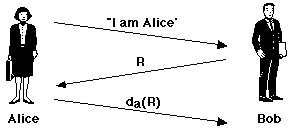
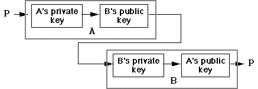

Encryption -- Public Key Systems
Public Key Systems
DES and its derivatives works well, but relies on both parties having a
copy of the same secret key. The problem of Key Distribution in
such systems can be a very difficult to overcome. In 1976, Diffie
and, Hellman proposed an enitrely new system called
Public Key Cryptography.
The basic ideas are:
-
An encryption method E is applied to the plaintext P
giving E(P), the ciphertext.
-
A decryption method D can be applied to the ciphertext
to yield the plaintext, thus:
P = D ( E ( P ) )
-
It is exceedingly difficult to deduce D from E.
-
E cannot be broken by any standard attack.
The original algorithm proposed by Diffie and Hellman for implementing
Public Key Cryptography turned out to be insufficiently strong to implement
a secure system. However, the idea of this type of cryptosystem was considered
worthy of further work.
RSA
In 1978, Rivest, Shamir and Adleman of MIT proposed a number-theoretic
way of implementing a Public Key Cryptosystem. Their method has been widely
adopted. The basic technique is:
-
Choose two large prime numbers, p and q.
-
compute n = p * q and x = (p-1)*(q-1)
-
Choose a number relatively prime to x and call it d.
This means that d is not a prime factor of x
or a multiple of it.
-
Find e such that e * d = 1 mod x.
To use this technique, divide the plaintext (regarded as a bit string)
into blocks so that each plaintext message P falls into
the interval
0 <= P < n. This can be done
by dividing it into blocks of k bits where k
is the largest integer for which
2k < n
is true.
To encrypt: C = Pe (mod n)
To decrypt: P = Cd (mod n)
The public key, used to encrypt, is thus: (e, n)
and the private key, used to decrypt, is (d, n))
RSA Example -- Key Generation
| To create the public key, select two large positive prime
numbers p and q |
p = 7, q = 17
Large enough for us! |
| Compute (p-1) * (q-1) |
x = 96 |
| Choose an integer E which is relatively
prime to x |
E = 5 |
| Compute n = p * q |
n = 119 |
| Kp is then n
concatenated with E |
Kp = 119, 5 |
| To create the secret key, compute D such
that (D * E) mod x = 1 |
Ks = 119, 77 |
RSA Example -- Encryption and Decryption
| To compute the ciphertext C of plaintext
P,
treat P as a numerical value |
P = 19 |
| C = PE mod n |
C = 66 |
| To compute the plaintext P from ciphertext
C: |
|
| P = CD mod n |
P = 19 |
RSA in Practice
RSA works because knowledge of the public key does not reveal the private
key. Note that both the public and private keys contain the important number
n
= p * q. The security of the system relies on the fact that n
is
hard to factor -- that is, given a large number (even one which
is known to have only two prime factors) there is no easy way to discover
what they are. This is a well known mathematical fact. If a fast method
of factorisation is ever discovered then RSA will cease to be useful.
It is obviously possible to break RSA with a
brute force
attack -- simply factorise
n. To make this difficult, it's
usually recommended that p and q be chosen
so that
n is (in 2002 numbers) at least 1024 bits.
One excellent feature of RSA is that it is
symmetrical.
We already know that if you encrypt a message with my public key then only
I can decrypt that ciphertext, using my secret key. However, it also turns
out that a message encrypted with my secret key can only be decrypted
with my public key. This has important implications, see later.
The RSA algorithm operates with huge numbers, and involves
lots of exponentiation (ie, repeated multiplication) and modulus arithmetic.
Such operations are computationally expensive (ie, they take a long
time!) and so RSA encryption and decryption are incredibly slow,
even on fast computers. Compare this to the operations involved
in
DES (and other single-key systems) which consist of repeated
simple XORs and transpositions. Typical numbers are that
DES is 100 times faster than RSA on equivalent hardware. Furthermore, DES
can be easily implemented in dedicated hardware (RSA is, generally speaking,
a software-only technology) giving a speed improvement of up to 10,000
times.
Public Key Cryptography In Summary
-
A public key is used to encrypt and a separate, different private
key to decrypt the message.
-
Each party involved generates a key pair.
-
Each party publishes their public key. This is made widely known to all
potential communication partners.
-
Each party secures their private key, which must remain secret.
-
Assuming A desires to send a message to B, A first encrypts the message
using B's public key.
-
B can decrypt the message using its private key. Since no one else knows
B's private key, this is absolutely secure -- no one else can decrypt it.
-
There still remain difficult problems of authentication of public keys,
compromised keys, bogus & out of date keys. Further, Public Key encryption
is very, very slow compared to single key systems.
-
A very useful and common way of using public key cryptography is as a means
of establishing/distributing secret keys for conventional single key cryptography,
see later.
Public Key Authentication
This is the technique by which an entity verifies that her communication
partner is who he purports to be and not an imposter. Authentication can
be easily achieved if both parties share a common secret key or keys, (eg,
typical password authentication) however it's much more nicely done using
Public Key cryptography:
Public key cryptosystems can provide authentication if, in addition
to:
P = D ( E ( P ) )
we also have:
P = E ( D ( P ) )
This is true for RSA. Now consider Alice, who wishes to authenticate herself
to a communications partner Bob. Bob already knows Alice's public key.

Alice announces to Bob that she wishes to communicate. Bob responds by
choosing a large, single-use random number R (sometimes
called a nonce) which he sends to Alice. Alice encrypts the random
number using her private key,
da and
returns the encrypted value to Bob. Bob applies Alice's public key
to the returned value, and if it decrypts to R then he
can be certain of the identity of his communication partner. It's obvious
that this protocol could be extended to verify the identity of Bob as well.
Digital Signatures
These extend the basic Public Key authentication protocols to
documents
or messages. The three key objectives are:
-
The receiver can verify the claimed identity of the sender, because only
the sender's public key will decrypt it.
-
The sender cannot later repudiate the contents of the message, because
only the possessor of the specific private key could have generated it.
-
The receiver cannot possibly have concocted the message himself.
The recipient's public key can (optionally) be used to encrypt the
message, so that only the recipient can read it. This step is only necessary
if both authentication and
secrecy are needed. We can take
a plaintext message P, and encode it thus:

Message Digests
The digital signature method of the previous slide creates an encrypted
message. It's often preferable to leave the message as plaintext, but append
a signature which verifies its integrity. A message digest is a
one-way hash function which has the following characteristics:
-
Given P, it is easy to calculate MD(P).
MD(P) is much shorter than the message itself.
-
Given MD(P), it is effectively impossible to find P.
-
No one can generate two messages that have the same MD(P).
The Internet standard for message digests is the MD5 algorithm,
invented by Rivest. Software implementations of this algorithm are widely
available. MD5 produces a 128 bit (16 byte) message digest which can be
appended to the message. Message digests such as MD5 are often referred
to as cryptograhic checksums, because they reveal whether the message
has been altered.
Typical usage of message digests combines public key cryptography
with the message digest function. In this case, a sender first computes
an MD5 digest as above, then encrypts it using her
private key,
and finally appends the encrypted digest to the message. A recipient can
read the message, and can be confident that it originated from the sender.
Digression: The Politics of Encryption
Most of the governments of the world are very interested in encryption.
Over the past 20 years, the USA government has proposed and/or mandated
a variety of encryption laws to either restrict the use of strong encryption,
or to force developers to provide a "back door" to their systems,
which would allow officials to read encrypted data. In addition, for many
years they have classified all forms of strong encryption as
munitions,
and restricted export of encryption products. It's only in the past year
or so that restrictions on encryption exports have been eased/lifted.
Other governments (eg France, Malaysia, China, etc) have, at various
times, simply banned the private use of strong encryption. In most cases,
these policies have subsequently been reversed.
The problem for governments is that strong (ie, unbreakable) encryption
can be used by criminals (or political enemies?) to communicate securely,
so there is a an obvious vested interest in restricting it. On the other
hand, strong encryption is absolutely necessary to enable Internet-based
commerce (we see some applications later), so a government which restricts
its use is limiting its people from participating in the new world of Internet-based
business.